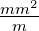

1. Conductores
1.1. Cá´alculo de resistividad
1.1.1. Resolver: Justificar en cada caso su respuesta
- Un conductor de cobre tiene una resistencia de 1Ω. Si se triplica la longitud. ¿Cuá´al será´a
el valor de su resistencia en Ohms?
- El conductor del problema anterior tiene secció´on cuadrada, si se duplica su secció´on.
¿Cuá´al será´a el valor de su resistencia?
- Si la longitud inicial del conductor del problema 1 es de 20m de largo. ¿Qué´e longitud
debe tener el conductor para que disminuya la resistencia a 0,4Ω?
- Un conductor de secció´on circular y 40 metros de longitud, tiene un diá´ametro de 2mm.
Otro conductor mide 30 metros de largo y tiene un diá´ametro de 1mm. Si en ambos se
mide el mismo valor de resistencia 4Ω, ¿Está´an hechos del mismo material?
- Calcular la resistividad para un conductor que posee 2Ω, tiene un diá´ametro de 3mm y
una longitud de 10 metros.
- Calcular la resistividad para un conductor que posee 10Ω, tiene un radio de 3mm y una
longitud de 40 metros.
- Un cable metá´alico parece ser buen conductor, sobre una longitud 5m y 1mm de diá´ametro
se midió´o 0,2Ω, ¿Qué´e resistencia tendrá´a un cable fabricado con el mismo material de 40m
largo y 2mm radio?
- Se conecta un conductor a una baterí´ıa de 9V y se mide con un amperí´ımetro que el
cortocircuito marca 4A. Si el conductor se corta a la mitad, y se vuelve a conectar.
¿Cuá´anto deberí´ıa marcar el amperí´ımetro?
- ¿Cuá´al es la resistividad del conductor del problema anterior si tiene una longitud de 2m
y una secció´on de 2mm2?
- Un conductor de cobre tiene una resistividad 0,0171Ωmm2∕m. Si tiene una longitud de
100m y una secció´on de 4mm2. Calcular su resistencia.
- Calcular el valor de la resistencia en Ohms(Ω) para un conductor de cobre con
resistividad igual a la del problema anterior, que tiene una longitud de 1000m y un
diá´ametro de 5mm.
- La resistividad para el cobre tiene dos representaciones 0,0171Ω
 y 1, 71x10−8Ωm Si
el hierro tiene una resistividad de 8, 90x10−8Ωm ¿Cual será´a su valor en Ω
y 1, 71x10−8Ωm Si
el hierro tiene una resistividad de 8, 90x10−8Ωm ¿Cual será´a su valor en Ω ?
?
- Elaborar una tabla con resistividades en Ω y Ωm para los materiales
cobre,hierro,plata, oro,estañ˜no, platino, aluminio y grafito.
- El conductor del problema 1.¿Es de realmente de cobre?
Siendo: ρ:Resistividad. s :Secció´on del conductor. l :longitud del conductor.
R = ρ() ⇒ ρ = R( )
)